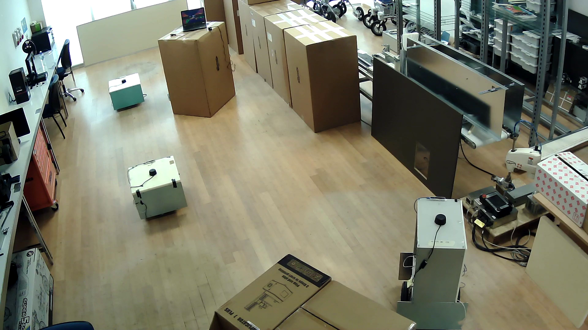
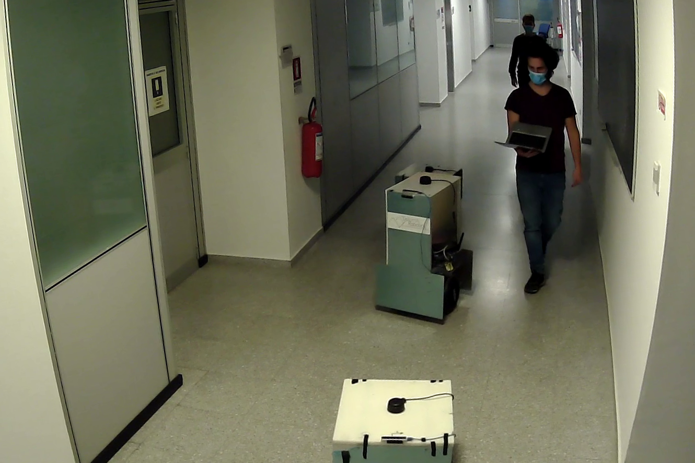

Distributed control algorithms for robotic systems
|
 |
The challenge of distributed control is about designing
local control laws such that a desired collective behavior
emerges from the local interactions with the neighboring agents
and the environment. The
complexity of distributed control design is compensated by its
undisputed benefits in terms of communication, sensing and
computing power requirements, of flexibility and of robustness.
Relevant problems that can be addressed using distributed
control in robotic applications are the following:
|
Related Publications: [Js1],[J2][C1],[C6].
Robot navigation in human-shared environments
|
 |
The ability to navigate their way through partially known
environments in complete autonomy is a key functionality
for mobile robots. However, the ambitious requirements of
a new generation of robotic applications set a high bar for
the development of navigation algorithms. Specifically, we can
identify five classes of requirements:
Robustness and safety in navigation
Socially-aware motion planning
Multi-agent coordination
Management of highly dynamical environments
Computation efficiency
|
Related Publications: [J1],[J3][C2],[C3],[C4],[C5].
|